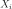
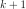
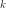
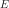

Random Mixture: affine combination of independent univariate distributions¶
A multivariate random variable  may be defined as an
affine transform of
may be defined as an
affine transform of  independent univariate random variable, as
follows:
independent univariate random variable, as
follows:
(1)¶
where is a deterministic vector with , a deterministic matrix and are some independent univariate distributions.
In such a case, it is possible to evaluate directly the distribution of
and then to ask any request compatible
with a distribution: moments, probability and cumulative density
functions, quantiles (in dimension 1 only) …
Evaluation of the probability density function of the Random Mixture
As the univariate random variables  are independent, the
characteristic function of , denoted , is
easily defined from the characteristic function of  denoted
denoted
 as follows :
as follows :

 , denoted
, denoted  :
several techniques are possible, as the inversion of the Fourier
transformation. This technique is not easy to implement.
:
several techniques are possible, as the inversion of the Fourier
transformation. This technique is not easy to implement.(2)¶
 small enough,
small enough,
 and
because of the
decreasing properties of . Thus the nested sums of the left
term of (2) are reduced to the central term
: the left term is approximatively equal to
and
because of the
decreasing properties of . Thus the nested sums of the left
term of (2) are reduced to the central term
: the left term is approximatively equal to
 .
. and are evaluated once only. and
. We denote
and are evaluated once only. and
. We denote  and respectively
the density and the characteristic function of the multivariate normal
distribution with the same mean
and respectively
the density and the characteristic function of the multivariate normal
distribution with the same mean  and same covariance
matrix
and same covariance
matrix  as the random mixture. By applying this
multivariate normal distribution to the equation , we obtain by
subtraction:
as the random mixture. By applying this
multivariate normal distribution to the equation , we obtain by
subtraction:where , ,
 , using the limit central theorem,
the law of tends to the normal distribution density
, using the limit central theorem,
the law of tends to the normal distribution density
 , which will drastically reduce
, which will drastically reduce  . The sum on
will become the most CPU-intensive part, because in the
general case we will have to keep more terms than the central one in
this sum, since the parameters
. The sum on
will become the most CPU-intensive part, because in the
general case we will have to keep more terms than the central one in
this sum, since the parameters  were
calibrated with respect to
were
calibrated with respect to  and not .
and not .The parameters are calibrated using the
following formula:
where and
 ,
,  are respectively the number of standard
deviations covered by the marginal distribution ( by
default) and the number of marginal deviations beyond
which the density is negligible (
are respectively the number of standard
deviations covered by the marginal distribution ( by
default) and the number of marginal deviations beyond
which the density is negligible ( by default).
by default).
The parameter is dynamically calibrated: we start with
 then we double value until the total contribution
of the additional terms is negligible.
then we double value until the total contribution
of the additional terms is negligible.
Evaluation of the moments of the Random Mixture
The relation (1) enables to evaluate all the moments of the random mixture, if mathematically defined. For example, we have:
Computation on a regular grid
The interest is to compute the density function on a regular grid. Purposes are to get an approximation quickly. The regular grid is of form:
By denoting  :
:
for which the term is the most CPU consuming. This term rewrites:
with:
The aim is to rewrite the previous expression as a  - discrete
Fourier transform, in order to apply Fast Fourier Transform (FFT) for
its evaluation.
- discrete
Fourier transform, in order to apply Fast Fourier Transform (FFT) for
its evaluation.
We set  and
and
 and
. For convenience, we introduce
the functions:
and
. For convenience, we introduce
the functions:
We use  instead of  in this function to simplify expressions below.
We obtain:
For performance reasons, we want to use the discrete Fourier transform with the following convention in dimension 1:
which extension to dimensions 2 and 3 are respectively:
We decompose sums of on the interval into three parts:
If we already computed  for dimension , then the middle term in this sum is trivial.
To compute the last sum of equation, we apply a change of variable :
Equation gives:
Thus
To compute the first sum of equation, we apply a change of variable :
Equation gives:
Thus:
To summarize:
- In order to compute sum from to , we multiply
by and consider

- In order to compute sum from
 to , we
consider
to , we
consider 
API:
- See
RandomMixture
Examples:
References:
- Abate, J. and Whitt, W. (1992). The Fourier-series method for inverting transforms of probability distributions. Queueing Systems 10, 5–88., 1992, formula 5.5.